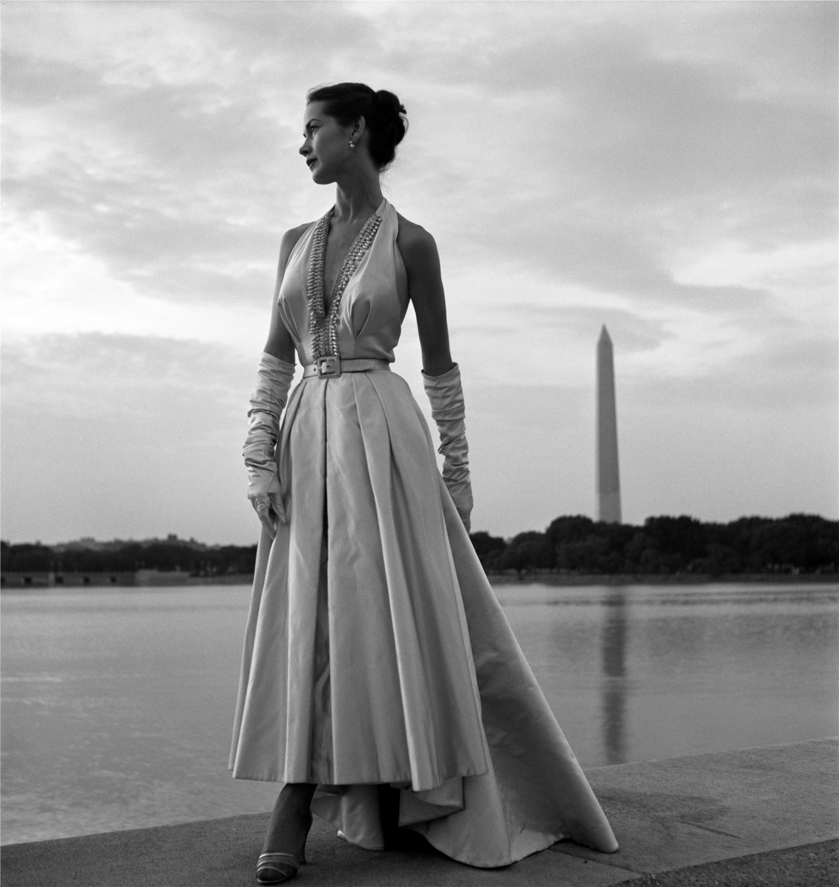

战争刚过去四年，长裙第一次敢于挥霍布料。托妮·弗里塞尔把摄影棚搬到了波托马克河的塔尔湖畔，让模特穿着一整幅裙撑般的绸缎长裙，迎着傍晚的水汽站在纪念碑的倒影旁——这既是一张时装照片，也是一份"战后终于可以再次华丽"的时代宣言。这张底片后来随弗里塞尔的全部档案一并捐赠给美国国会图书馆，成为公有领域里被引用最多的"新风貌"影像之一。
弗里塞尔用禄来福来（Rolleiflex）双反相机的方画幅拍摄，把模特安排在画面左侧偏上的三分之一处，让她的侧脸、颈线与裙摆的垂直褶皱，同右侧远处纤细的华盛顿纪念碑遥遥呼应——两个"直立体"一近一远，构成整张照片真正的骨架。
地平线被压得极低，天空占去画面上半三分之二，大片阴云给足了呼吸感；水面像一面磨砂的镜子，把纪念碑拉出一道颤动的倒影，也把裙摆最亮的高光又反射了一遍，让"垂直"这件事被重复强调了三次。
模特没有面对镜头，而是侧身望向画外——这在当时的时装摄影里并不常见，摄影棚拍法讲究让顾客一眼看清裙子的每个细节，弗里塞尔却把她放进了一个真实的、有风、有水汽的场景里，让照片有了叙事感而不只是产品展示。
这是一张彻底放弃"色相"的照片，全部表现力压缩进明度一个维度：绸缎裙摆的高光几乎逼近纸面的死白，模特的发髻与远处树线压到接近死黑，中间层层叠叠的，是天空、水面、裙摆阴影面构成的至少五级灰。
没有色彩可用时，反差本身就是"配色"：弗里塞尔把全片最亮的两块光（裙摆高光、天空云隙）安排在一条对角线两端，把最暗的两块（发髻、湖岸树线）安排在另一条对角线上，四个极值互相牵制，画面才没有因为通篇灰调而显得平淡。
换算成可复用的明度色板：柔光缎面高光、云隙浅灰、湖水中灰、湖岸暗绿灰、发髻近黑——这五级灰阶，就是这张照片真正的"调色板"。
傍晚将暗未暗的天光是天然柔光箱：没有硬阴影、没有明显方向性光源，光线从四面八方的云层里漫射下来，均匀地包裹住绸缎的每一道褶皱，这正是弗里塞尔偏爱的"自然光时装摄影"——比起摄影棚里精心布置的聚光灯，她更信任真实天气给出的质感。
裙子本身是1947年迪奥"新风貌"（New Look）廓形的直接演绎：极度合体的抹胸上身、收紧的天然腰线，以及用去数米绸缎打褶而成的伞裙——这种"上简下繁"的对比廓形，用布料的体量感取代了战时紧缩配给年代的窄裙线条，本身就是一种视觉宣言。
颈间缀满珠饰的深V领口、及肘绸缎长手套、细腰带，是那个年代晚礼服的标准三件套语言——每一件单品都在强化同一个廓形逻辑：让视线先聚焦在收紧的腰，再被裙摆的体量"炸开"。
1947年之前，欧洲刚刚走出物资配给制，布料按人头限量供应，裙子越做越窄、越做越短是不得已的节俭。迪奥用一条动辄需要十几米绸缎的伞裙，第一次公开"挥霍"，这在当时引发了巨大争议，却也精准击中了人们对战后重新拥有"美"的渴望——这条裙子里，藏着整整一代人的松了一口气。
弗里塞尔本人的职业生涯同样是一种"松了一口气"：她是二战期间美国红十字会认证的随军摄影师之一，镜头下拍过战地医院、拍过阵亡通知书上的士兵面孔。1949年，她把镜头重新对准和平年代的丝绸与湖水，这种从战地到时装的转身，本身就是一份值得读出来的个人叙事。
也正是弗里塞尔，把时装摄影从摄影棚里解放出来，让模特第一次可以在真实的户外场景里"生活"——纪念碑、湖水、阴天，这些原本与时装无关的元素，从此成为时装叙事可以借用的语言，直接影响了后来整整几代时装摄影师的拍摄方式。
托妮·弗里塞尔（Toni Frissell，1907–1988）出身纽约名门，二十多岁才半路出家做摄影助理，很快在《Vogue》与《Harper's Bazaar》站稳脚跟，成为最早把时装模特带到户外、带进真实动态场景里拍摄的摄影师之一。
她的镜头远不止时装：二战中作为红十字会随军摄影师留下大量战地影像，战后又成为美国高尔夫球协会第一位官方女性摄影师。1971年，她将自己毕生近三十四万件底片与印样全部捐赠给美国国会图书馆，绝大多数因此进入公有领域，供任何人免费查阅使用——这张照片正是其中之一。